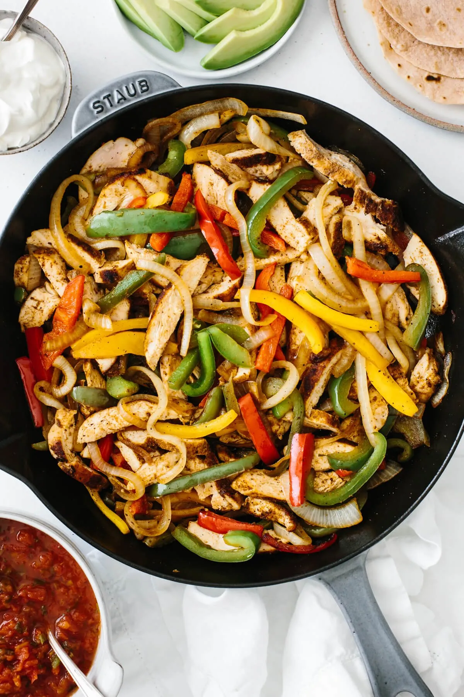

Chicken Fajitas
Chicken Fajitas

Chicken, onions, and peppers with a homemade seasoning
This is a recipe I found a long time ago. I use it every time I make fajitas now, as my family all love and demand it.
This is a fairly simple recipe, where we will end up making out own amazing spice blend and charring our vegetables to perfection.
Ingredients
Chicken Fajitas
- 3 boneless skinless chicken breasts
- 1 onion, thinly sliced
- 3 bell peppers, thinly sliced
- 2 Tbsp olive oil
- 1/2 lime
Fajita Seasoning
- 1/2 Tbsp chili powder
- 1/2 Tbsp ground cumin
- 1 tsp garlic powder
- 1/2 tsp smoked paprika
- 1/2 tsp oregano
- 1/2 tsp salt
- 1/4 tsp pepper
For Serving
- tortillas
- sour cream
- pico de gallo
- avocado
Steps
- Add the fajitas seasoning ingredients to a small mixing bowl and stir together.
- Generously sprinkle the fajita seasoning on both sides of the chicken and use your fingers to press it into the chicken.
- Heat the oil in a large skillet over medium heat. Sear the chicken breasts for about 7-8 minutes on each side.
- While your chicken is cooking, cut the bell peppers and onion into thin slices.
- Once the chicken has finished cooking, remove it to a plate and let it rest for a couple of minutes. Add the bell peppers and onion to the same skillet over medium heat and saute for 4-5 minutes, stirring frequently.
- When the bell peppers are just about done sauteeing, slice the chicken breasts into strips.
- Add the chicken back into the skillet, add a squeeze of fresh lime juice and stir everything together.
- Serve immediately with tortillas and extra toppings such as sour cream, pico de gallo and guacamole.